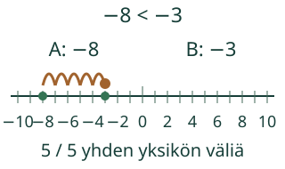
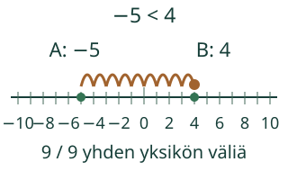

Aava vertaa kahta paikkaa samalla lukusuoralla.
Yhdistän lukujen järjestyksen ja välin pituuden.
Pohdi ensin: Muuttuuko etäisyys, jos aloitat toisesta päästä?
Kaksi esimerkkiä ja uusi tilanne
Järjestys ja etäisyys yhdessä
−4 on luvun3 vasemmalla puolella: −4 < 3. Välin pituus on4 väliä nollaan ja3 lisää:7. Lähtökohtaa ei lasketa askeleeksi. Takaisin kulkiessa järjestys ja etäisyys ovat samat, vaikka kulkusuunta vaihtuu.

Virheajatus: negatiivisten lukujen välin pituus on negatiivinen. Etäisyys on aina vähintään0. Jos molemmat luvut ovat−3, niiden etäisyys on0: samassa kohdassa ei ole kuljettavaa väliä.

Kokeile itse
Voit vastata suoraan. Malli ja apu ovat valinnaisia; ei pakollista puhetta tai kuuntelua.
Luvut ovat −4 ja 3. Kirjoita ensin pienempi, sitten suurempi ja lopuksi niiden etäisyys lukusuoralla.
Tarvitsen apua
Etsi molemmat luvut. Vasen on pienempi. Laske välejä niiden välillä: nollan yli esimerkiksi −4→0 on 4 ja0→3 on3, yhteensä7. Sama kohta antaa0.
Avun kanssa tehty vastaus on tuettua harjoittelua. Voit avata esimerkin ja jatkaa samaa tavoitetta.
Lisätutkimus ja opettajalle
Yhdistää samalle kokonaislukuparille suuruusjärjestyksen ja ei-negatiivisen etäisyyden; erottaa etumerkin, kulkusuunnan ja välin pituuden.
Luokat 7–9. Kanoninen rooli integration. Pakolliset esitiedot säilyvät graafista: kaikki nimetyt taidot tarvitaan. Vahva tuki ei ole lisäportti. Välit voi näyttää askel kerrallaan samalla asteikolla. Pienempää lukua tai etäisyyttä ei tarvitse nimetä ääneen.
Merkitse lattialle tasaväliset luvut−5…5. Vertaa paikkojen järjestystä ja laske niiden välit kummastakin suunnasta. Luvut eivät ole esineiden lukumääriä, eikä ääneen nimeämistä vaadita. Puoliväli−4:n ja2:n välillä on−1: kummastakin on3väliä. Tämä valinnainen jatko ei kuulu ydintehtävän hyväksyntään.
Mallien päätepisteet ovat välillä−10…10. Etäisyys on0…20 yksikköväliä. Samassa kohdassa etäisyys on0. Lisätehtävät eivät ole yleinen kokonaislukulaskennan koe.
Paikallinen vastaus ei osoita itsenäistä, viivästettyä tai formaalia hallintaa. ORDER- ja DIST-alitaitojen lisäksi tarvitaan erillinen soveltamisnäyttö; tämä sivu ei kirjoita mastery-tiloja. Ei henkilöhistoriaa, tallennusta tai oppijaseurantaa. Ihmis-/oppilas-/vaikuttavuus-/täyden manuaalisen saavutettavuuden ja julkaisun hyväksyntää ei ole tehty.
Lopuksi: Jos lähdet samalta väliltä vastakkaiseen suuntaan, mikä muuttuu ja mikä pysyy samana?